Painting, textures & tint
Colour your terrain the way you'd use Roblox's Terrain Editor Paint — but with 16 fully editable texture slots you can swap for your own images, slope-limited and cliff-wall painting, one-click texture presets, and a Tint layer for biome and territory colours.

What you'll learn
- Where the Paint tool and its three panels live, and how they map to Roblox's Terrain Editor Paint.
- How to paint your first patch, resize the brush, pick with the eyedropper and undo.
- The 16 texture slots: rename them, re-colour them, change their pattern and scale, and decide which ones grow grass.
- Swap in your own image as a ground texture.
- Texture presets: apply a whole palette in one click, and export your own.
- Paint Walls for cliff faces and Slope Min / Max for "rock only on steep ground".
- The Tint tool: wash colour over cells for biomes, territories and paths.
- A filterable reference of every control, plus recipes.
A few Godot words first
- Node
- One object in your scene — like an Instance in Roblox. The terrain is a node called
MarchingSquaresTerrain. - Scene dock
- The tree of nodes at the top left; Godot's version of Roblox's Explorer. A dock is any movable editor panel.
- FileSystem dock
- The panel at the bottom left listing your project's files and folders — a bit like Roblox's Asset Manager, but it shows real files on disk.
- Inspector
- The panel on the far right listing the selected node's properties — Roblox's Properties window.
- 3D view (viewport)
- The big picture of your world in the middle of the editor. You paint directly in it.
- Resource /
.tres - A reusable data file (a texture, a material, a preset).
.tresis Godot's text resource file. A texture preset is one of these. res://- "The project folder".
res://addons/MarchingSquaresTerrain/texture_presets/is a folder inside your project. - Texture2D / PNG
- An image file used as a texture. Any PNG in your project can become a ground texture.
- Cell
- The terrain is a grid of cells (squares or hexes). Paint changes which texture each cell shows; it never changes height.
- LMB / RMB
- Left / right mouse button. "Wheel" is the scroll wheel.
Where the Paint tool lives
The terrain tools only appear while a MarchingSquaresTerrain node is selected in the Scene dock. Click it, then click Paint in the tool column on the left of the 3D view (or press 6). Three things appear. Click the numbered dots to tour them.
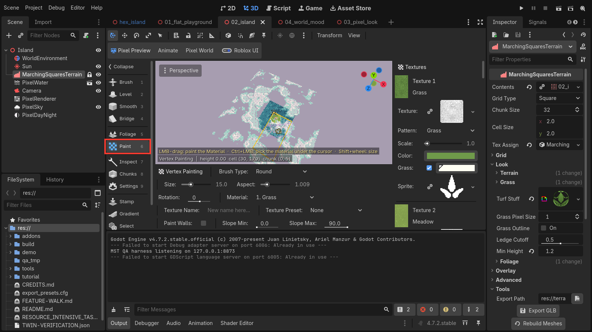
- Left tool column — Brush, Level, Smooth, Bridge, Foliage, Paint, Inspect, Chunks, Settings, then Stamp, Gradient, Select, Tint, Grid. Paint is number 6. Tint has no number key.
- Bottom strip titled Vertex Painting — the Paint tool's settings. ("Vertex Paint" is the tool's internal name; the button just says Paint.)
- Right "Textures" panel — the 16 texture slots. It only shows for Paint and Foliage.
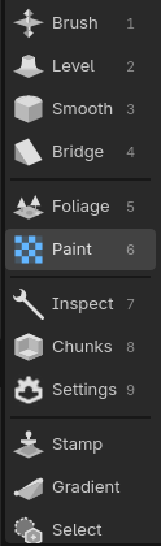
Hover the Paint icon and its tooltip sums the tool up:
"Used to paint textures onto the terrain. There are 16 available textures. Every texture can have grass ('Has grass' in the right panel). 16 is a void material making terrain invisible. Texture presets can be used to quickly swap between texture palettes; they can be exported via the right-hand panel at the bottom. 'Quick Paints' are a way to quickly set textures while modelling the terrain. Ctrl+LMB: Pick the material under the cursor."
While Paint is active, the hint line at the bottom of the 3D view reads:
LMB-drag: paint the Material · Ctrl+LMB: pick the material under the cursor · Shift+wheel: size
The Tint and Grid buttons sit at the very bottom of the tool column and can be hidden behind the Output panel. Click the Output tab at the bottom of the editor to collapse it, or press Collapse at the top of the column to shrink the toolbar to icons. It's a layout quirk, not a bug.
Roblox Terrain Editor → MST, at a glance
| In Roblox Studio | In MST |
|---|---|
| Terrain Editor → Paint | The Paint tool (6), strip "Vertex Painting". |
| Material picker (Grass, Rock, Sand…) | The Material dropdown or the slot buttons in the Textures panel — 16 slots, each editable. |
| Material colours (Terrain → MaterialColors) | Each slot's Color field, plus the Tint tool for per-cell colour. |
| Custom MaterialVariant | Swap a slot's Texture for your own PNG. |
| Eyedropper / sampling a material | Ctrl+LMB on the terrain. |
| "Grass" material's grass blades | The Grass tick on any slot (see Foliage, grass & flowers). |
| Brush Size | Size or Shift+wheel. |
| Brush Strength | None — Paint always fully replaces the texture. (Tint has Opacity.) |
| No equivalent | Texture presets, Paint Walls, Slope Min/Max, Tint. |
Roblox gives you a fixed material list — Grass is always Roblox's grass. Here there are 16 slots and every one is yours to change: its image, its procedural pattern, its colour, its tiling scale and whether grass grows on it. Think of the slots as a 16-colour paint palette you mix yourself. The default slot names (Grass, Cliff, Dark Rock, Sand…) are there so Roblox habits still work: "Grassy" ≈ slot 1, "Rock" ≈ 6 Cliff or 7 Dark Rock, and so on.
Tutorial: paint your first patch
Open res://demo/hex_island.tscn (FileSystem dock → demo → double-click). It's a dense hex island, so almost every click lands on a real cell. For a clean top-down view, open the 3D view's View menu (or the Perspective button in the top-left of the view) and choose Top View.
- Click
MarchingSquaresTerrainin the Scene dock. The tool column appears in the 3D view. - Click Paint (or press 6). The Textures panel and the Vertex Painting strip appear.
- In the strip open Material and choose 4. Sand. (Clicking the Texture 4 button in the right panel does the same.)
- Move the mouse over the terrain. A pink ring with highlighted cells shows the brush footprint — that's a preview, not paint.
- LMB-drag across some grass. Every cell under the brush turns to sand.
- Hold Shift and roll the wheel to resize the brush, then paint again.
- Hold Ctrl and click a grass cell: the Material jumps back to 1. Grass (the eyedropper).
- Press Ctrl+Z. The whole last stroke disappears in one step.
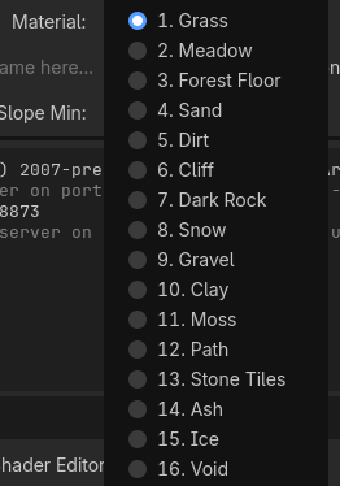
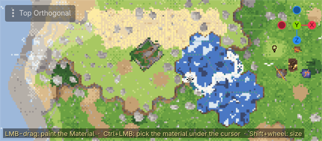
Drag the divider to compare before and after the stroke.
Top-down view shows the textures without grass. From the straight-down Top view, grass blades are culled, so you see exactly which texture each cell has. In a normal angled view, grass covers the grass-enabled slots (1 Grass, 2 Meadow, 3 Forest Floor, 11 Moss by default). Use Top view to paint, angled view to admire.
Click on real terrain. On sparse scenes like tutorial/02_island.tscn, a click over a gap or water prints no sample to the Output panel and paints nothing. Move onto solid ground. Also: the pink ring is only the brush preview — move the mouse off the 3D view before taking a clean screenshot.
The brush: shape, size, aspect, rotation
Paint uses the same brush as the sculpting tools (see Sculpting terrain). The first four controls in the strip set its footprint.
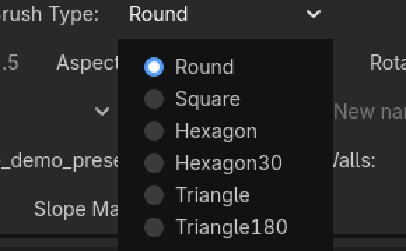
Mouse-wheel shortcuts while Paint is active
| Gesture (over the 3D view) | Does |
|---|---|
| Shift+wheel | Brush Size. Does not zoom the camera. |
| Alt+wheel | Brush Rotation (only matters for non-round brushes). Does not zoom the camera. |
| Ctrl+wheel | Zooms the camera. Paint has no Strength, so Ctrl+wheel is free. |
| Plain wheel | Zooms the camera (normal Godot navigation). |
On the height tools (Smooth, Raise/Lower, Gradient), Ctrl+wheel changes Strength. Paint and Tint don't have a Strength slider, so there Ctrl+wheel just zooms. Shift+wheel and Alt+wheel never zoom the camera on terrain tools — they only change the brush.
The eyedropper: Ctrl+LMB
Hold Ctrl and left-click any terrain cell. The texture under the cursor becomes the active slot: the Material dropdown and the slot button in the Textures panel both update. Then just let go of Ctrl and paint.
This is the material eyedropper you know from Roblox's Terrain Editor. Use it when you want to "continue" a texture that's already in the world without hunting for its slot name.
Undo and redo
Every paint stroke — from mouse-down to mouse-up — is one undo step, named terrain vertex paint in Godot's History dock. Tint strokes are named terrain tint paint. Ctrl+Z undoes one stroke; Ctrl+Shift+Z redoes it. Undo restores the terrain exactly as it was.
Occasionally, right after an undo, the grass on top can look slow to redraw for a moment. The data has already reverted; give the view a second or nudge the mouse.
The 16 texture slots
The Textures panel (right of the 3D view) shows the terrain's texture set: 16 slots, each a little card of settings. Its tooltip: "Texture slots of this terrain's texture set. Click a slot to paint with it (same as the Material dropdown)." Tour slot 1:
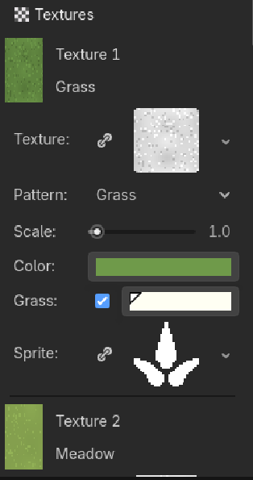
Slot fields
| Field | Type | What it does |
|---|---|---|
| Preview swatch | 36×36 image | Live preview of the slot (texture or pattern, tinted by Color). |
| Texture N | toggle button | Select this slot to paint. Same as the Material dropdown. |
| Name | text field | Display name, shown in the Material dropdown. |
| Texture | resource picker (Texture2D) | The slot's image, ideally white-ish pixel art so Color can tint it. Empty = procedural Pattern. |
| Pattern | dropdown (13) | Grass, Meadow, Forest, Sand, Dirt, Cliff, Dark Rock, Snow, Gravel, Clay, Moss, Path, Plain. Picks the bundled ground texture of that pattern (textures/ground/); without a texture it's generated procedurally. Hidden on slot 16. |
| Scale | slider 0.1 – 40 | Texture / pattern scale. |
| Color | colour button | Multiplies the texture or pattern. |
| Grass | checkbox + colour | Grow grass on this texture, and in which colour. |
| Sprite | resource picker (Texture2D) | Grass sprite for this texture. Empty = the terrain's grass texture. |
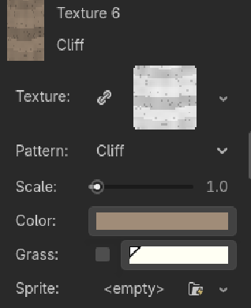
The default slots
Painting slot 16 Void makes those cells invisible. Use it to punch holes for caves, cut the edge of an island, or hide ground under a building. It has no Pattern field.
Renaming a slot
Two ways: type in the slot's name field in the Textures panel, or select the slot as Material and type in the strip's Texture Name box (placeholder "New name here…") and press Enter. The new name appears in the Material dropdown. Good names ("Volcanic Ash", "Desert Path") make big palettes easy to use.
Roblox has nothing like the per-slot Grass tick or the procedural Pattern. In Roblox, only the Grass material grows grass; here any slot can — tick it on "Snow" and you get grass on snow. Grass itself (how tall, how chunky, where it's allowed) is covered on Foliage, grass & flowers.
Use your own image as a texture
This is the artist's favourite: any PNG in your project can become a ground texture. The Texture field is a Godot resource picker — a box that holds a file, with a small ▾ menu to load, clear or edit what's in it.
- Put your PNG in the project folder (drag it into the FileSystem dock, or copy it into the folder with your file manager). Tip: white-ish, light pixel art works best, because the slot's Color multiplies it.
- In the Textures panel, scroll to the slot you want to replace (e.g. Texture 10 · Clay).
- Click the small ▾ at the right of its Texture field.
- Choose Quick Load… (a searchable list of every image in the project) or Load… (a normal file browser).
- Pick your PNG. The slot's preview swatch and the picker thumbnail update.
- Select that slot as the Material (click its Texture 10 button) and paint. The ground now shows your image.
- Adjust Scale to change how often it repeats, and Color to tint it. Set Color to white to see the image's own colours.
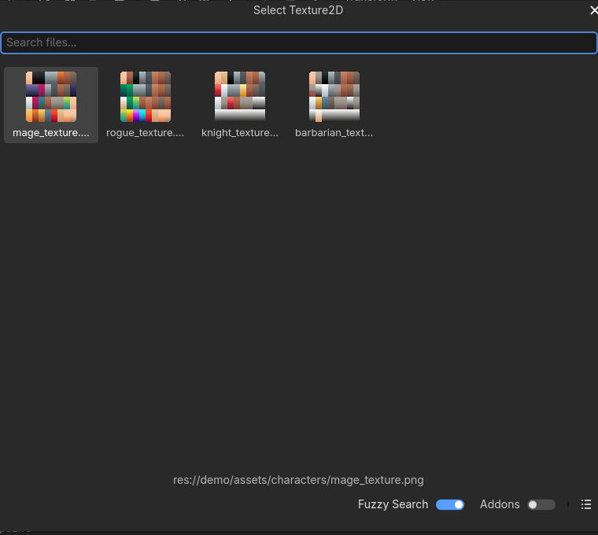
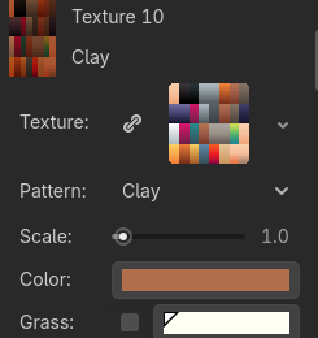
To go back to the built-in look, open the ▾ menu and choose Clear. With Texture empty, the slot uses its procedural Pattern again.
In Roblox you'd create a MaterialVariant in MaterialService and point it at uploaded images. Here it's one field per slot, and the image stays a normal file in your project.
Texture presets
A texture preset is a saved set of all 16 slots (names, textures, patterns, colours, grass settings) as a .tres resource file. Apply one and the whole palette swaps; export one to reuse your palette on another terrain.
Apply a preset
- With Paint active, open the strip's Texture Preset dropdown.
- Choose MST Classic (the bundled preset). All 16 slots rebuild and the whole terrain repaints with the new palette — cells keep their slot numbers, only the look of each slot changes.
- Choose None (the first entry) to clear the assignment back to the default.
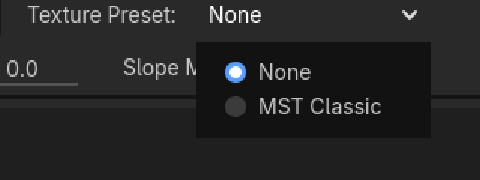
.tres in res://addons/MarchingSquaresTerrain/texture_presets/. Presets you export show up here too.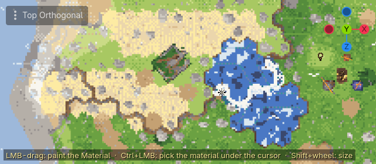
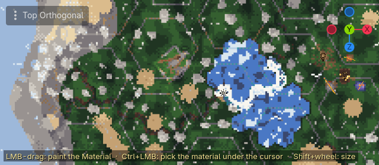
Same cells, same slot numbers — only the palette changed.
Export your own preset
- Set up your 16 slots the way you like them.
- Scroll the Textures panel to the very bottom (past the Auto Rules section) and click Export Texture Preset.
- The Save Preset dialog asks for a name ("Preset name (saved to res://addons/MarchingSquaresTerrain/texture_presets/):"), prefilled with
new_texture_presetor the current preset's name. - Type a name and click OK. It's saved as
snake_case(name).tresin that folder. - If the name already exists, a second box asks "<path> already exists. Overwrite it?"
- Your preset now appears in every terrain's Texture Preset dropdown.
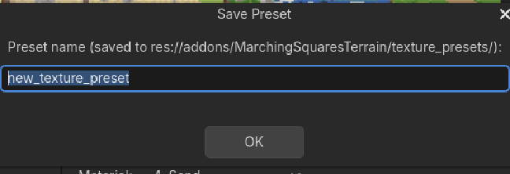
Where the texture set lives: Tex Assign
The 16 slots belong to a MarchingSquaresTexturePreset resource assigned to the terrain. You can see it in the Inspector as Tex Assign. Choosing a preset in the strip replaces it.
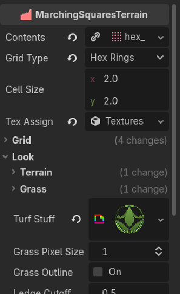
Top to bottom, the painting-related Inspector fields are:
- Contents — the terrain's data resource.
- Grid Type (Square / Hex Rings / …), Chunk Size, Cell Size — the grid your paint lands on.
- Tex Assign — the live texture set the 16 slots edit.
- Look → Terrain and Look → Grass — the terrain shader that draws painted textures and tints.
- Turf Stuff, Grass Pixel Size, Grass Outline, Ledge Cutoff, Min Height — how grass on grass-ticked slots renders (see grass look).
A grey "(N changes)" tag on a group means it differs from the resource's defaults.
How neighbouring textures blend at their borders is set by Blend Mode on the Settings tool (9) → Grid tab, not in the Paint strip. See Chunks, settings & saving.
Below the 16 slots, the panel has an Auto Rules section for procedural auto-texturing. It's an advanced feature and isn't covered in this guide.
Paint Walls: texturing cliff faces
Each cell has a floor texture (its top) and a wall texture (the cliff faces where it drops to a lower neighbour). Normally Paint changes floors. Tick Paint Walls and the brush changes the wall texture instead — the flat top is left alone.
- Angle the camera so you can see a cliff face (Top view, then middle-drag to tilt; or any perspective view).
- Tick Paint Walls in the strip.
- Choose a Material, e.g. 8. Snow.
- LMB-drag across the cliff. The cliff faces turn white; the grass on top stays green.
- Untick Paint Walls to go back to painting floors.
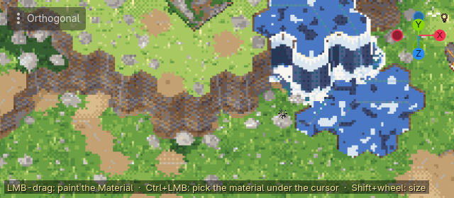
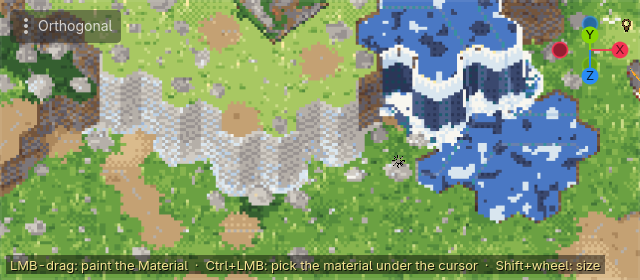
Roblox terrain decides cliff materials for you (or you repaint the whole voxel). Here the floor and wall of one cell can be completely different textures: grass on top, snowy rock on the side.
Slope Min & Slope Max: paint only steep (or flat) ground
Slope Min and Slope Max (0–90°) filter the brush by how steep the ground is. A cell only takes the paint if its slope is at least Slope Min and at most Slope Max. The defaults, 0 and 90, mean "no filter" — paint everything.
- Slope Min ≈ 45 with Cliff or Dark Rock: rock on slopes, flat grass untouched.
- Slope Min near 90: only near-vertical cliffs.
- Slope Max ≈ 20: only near-flat ground (e.g. paths and snow caps that shouldn't creep down cliffs).
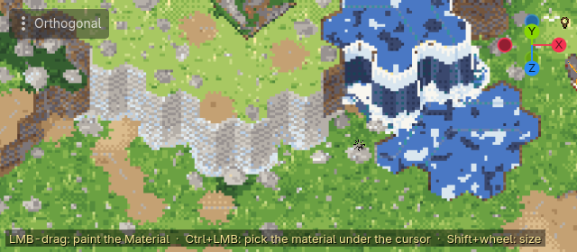
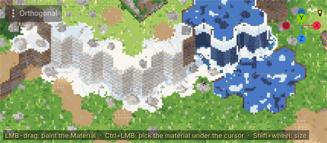
Combine with Paint Walls: Walls decides which face (floor or wall) changes; Slope decides which cells are allowed. Remember to reset Slope Min to 0 afterwards, or your next stroke will "mysteriously" miss flat ground.
The Tint tool: colour washes for biomes, territory and paths
Tint paints a colour over whole cells, on top of whatever texture they have. Use it for biome hints (a reddish desert edge), territory colours in a strategy map, paths, or decal-like marks. Tints are saved with the terrain and drawn by the terrain shader in the editor and in the game — under fog of war and under any runtime set_cell_tint() tints a programmer adds.
Tint is in the lower "extra tools" group of the column (below Select). It has no number shortcut — click its icon. It has no right panel. Hint line: LMB-drag: paint the tint · RMB: erase · Shift+wheel: size.
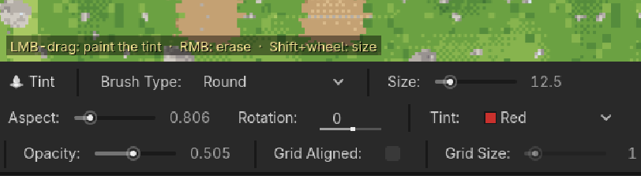
The ten tint colours:
(Swatches are approximate; the real colours come from the tool.)
- Select the terrain, then click Tint in the tool column (collapse the Output panel if you can't see it).
- Pick a Tint colour and set Opacity (0.5 is a soft wash; 1.0 is solid).
- LMB-drag over the ground to wash colour over it.
- RMB-drag to erase tint (back to none).
- Ctrl+Z undoes a whole tint stroke (
terrain tint paint).
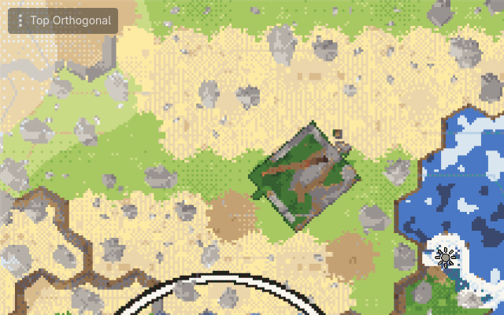
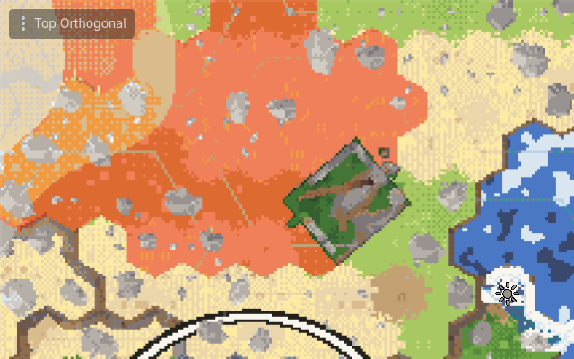
Roblox has no equivalent: terrain colour there is per material, so recolouring one region means recolouring every bit of that material. Tint is a separate colour layer per cell, on top of any texture. Think of it as a translucent paint you can always scrape off with RMB.
On Tint, Ctrl+wheel zooms the camera (Tint has no Strength). Grid Aligned + a Grid Size of 1–3 gives crisp, cell-exact territory borders for strategy maps.
Full reference
Every control on the Paint strip, the Textures panel and the Tint strip. Type to filter (try "slope", "grass" or "wheel").
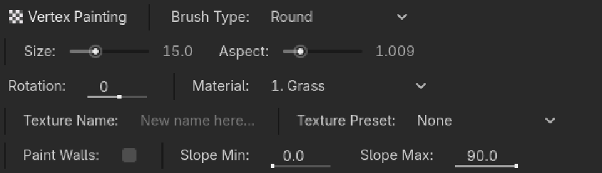
Brush Type
Shape of the brush footprint. Tooltip: "Brush shape."
- Options
- Round, Square, Hexagon, Hexagon30, Triangle, Triangle180
- Default
- Round
Size
Brush diameter in world units. Tooltip: "Brush diameter in world units (Shift+wheel)."
- Range
- 1 – 50
- Default
- 15.0
- Shortcut
- Shift+wheel
Aspect
Brush Z radius / X radius — stretches the brush into an ellipse or rectangle.
- Range
- 0.20 – 5.0
- Default
- 1.0 (displays ≈1.009)
Rotation
Brush rotation in degrees; only matters for non-round brushes.
- Range
- −180 – 180°
- Default
- 0
- Shortcut
- Alt+wheel
Material
Which texture slot you paint. Same as clicking a slot's "Texture N" button. Tooltip: "Texture slot to paint."
- Options
- The 16 slots by name ("1. Grass" … "16. Void")
- Default
- 1. Grass
- Shortcut
- Ctrl+LMB picks from the terrain
Texture Name
Renames the selected material. Type and press Enter.
- Placeholder
- New name here…
Texture Preset
Apply a whole texture palette to this terrain; replaces Tex Assign. More.
- Options
- None + every
.tresintexture_presets/(MST Classic bundled) - Default
- None
Slope Min
Only affect terrain at least this steep (degrees). More.
- Range
- 0 – 90°
- Default
- 0.0
Slope Max
Only affect terrain at most this steep (degrees). 90 = no upper limit.
- Range
- 0 – 90°
- Default
- 90.0
Strength (absent)
Paint has no Strength control; each stroke fully sets the texture. That's why Ctrl+wheel zooms the camera on Paint and Tint instead of changing Strength.
Texture N button
Paint with this texture (sets Material). Pressed = active slot.
Preview swatch
36×36 preview of the slot's texture or pattern, tinted.
Slot name
The name shown in the Material dropdown.
Texture (image)
The slot's Texture2D. White-ish pixel art, tinted by Color. Empty = procedural Pattern. ▾ → Quick Load… / Load… / Clear. More.
Pattern
Built-in ground pattern; picks the bundled texture in textures/ground/, or generates it procedurally when Texture is empty.
- Options
- Grass, Meadow, Forest, Sand, Dirt, Cliff, Dark Rock, Snow, Gravel, Clay, Moss, Path, Plain
Scale
Texture / pattern tiling scale.
- Range
- 0.1 – 40
- Default
- 1.0
Color
Ground colour; multiplies the texture or pattern. No alpha.
Grass (tick + colour)
Grow grass on this texture, in this colour. On by default for slots 1, 2, 3 and 11. See grass.
Sprite
Grass sprite (white leaves on alpha, coloured by Grass). Empty = the terrain's grass texture.
Auto Rules
Procedural auto-texturing rules. Advanced; not covered in this guide.
Export Texture Preset
Save this terrain's texture set as a preset in res://addons/MarchingSquaresTerrain/texture_presets/. More.
Tint (colour)
The colour LMB paints; RMB erases.
- Options
- Red, Orange, Yellow, Green, Teal, Blue, Purple, Pink, White, Black
- Default
- Red
Opacity
Strength / alpha of the painted tint.
- Range
- 0.05 – 1.0
- Default
- 0.5
Grid Aligned
Snap the brush to whole cells.
- Default
- off
Grid Size
Size of the grid-aligned stamp in cells.
- Range
- 0 – 20
- Default
- 1
LMB-drag
Paint the Material (Paint) or the Tint colour (Tint). One stroke = one undo step.
Ctrl+LMB (eyedropper)
Pick the material under the cursor; Material and slot button update.
RMB-drag
Erase tint back to none.
Mouse wheel
Shift+wheel = Size, Alt+wheel = Rotation (neither zooms). Ctrl+wheel and plain wheel zoom the camera.
Undo / redo
Ctrl+Z / Ctrl+Shift+Z. History names: terrain vertex paint, terrain tint paint.
Tex Assign
The terrain's MarchingSquaresTexturePreset — the live texture set. Replaced by the Texture Preset dropdown.
Recipes
- Material 4. Sand, Size ≈ 10, Slope Max ≈ 20.
- Paint a band along the water's edge. The Slope Max keeps sand off any steep bank.
- Drop Size to ≈ 3 and dab a few 9. Gravel cells into the sand for texture.
- Sculpt a mountain first (see Sculpting).
- Material 6. Cliff, Slope Min ≈ 45, a big brush. Sweep over the whole mountain: only the steep sides go rocky.
- Tick Paint Walls, Material 7. Dark Rock: sweep again to darken the cliff faces.
- Untick Paint Walls, Slope Min 0, Slope Max ≈ 15, Material 8. Snow: paint the flat peaks.
- Material 12. Path (or 5. Dirt), Brush Type Square, Size ≈ 3.
- Drag one continuous stroke from door to door. One stroke = one undo, so a wobble is easy to retry.
- Optional: switch to Tint, Yellow, Opacity 0.2, to make the path read from far away.
- Pick a slot you don't use (e.g. 14 Ash). Rename it ("Mushroom Turf").
- Swap its Texture for your own PNG, set Color, tick Grass and pick a grass colour.
- Paint the biome. When happy, Export Texture Preset so other terrains can use it.
- Tint tool, Grid Aligned on, Grid Size 1, Opacity ≈ 0.4.
- Blue for player 1, Red for player 2: paint each region cell-exact.
- RMB-erase to redraw a border. The tints ship with the terrain into the game.
Use slow, steady drags — a stroke records every cell the brush passes over. Paint from Top view for precision, then tilt to check how grass and walls look. Paint never changes height, so you can repaint as often as you like.
Check yourself
You want the image lava.png on your ground. Where does it go?
In the Textures panel, on a slot's Texture field: ▾ → Quick Load… or Load… → pick the PNG. Then select that slot as the Material and paint. Set Color to white to see its true colours.
How do you put rock only on the steep parts of a hill?
Set Slope Min to about 45, choose Cliff or Dark Rock, and paint over the whole hill. Flat cells are skipped. Reset Slope Min to 0 afterwards.
Your cliff faces are brown but you want them white, without touching the grass on top. How?
Tick Paint Walls, choose Snow, and drag over the cliff. Only the wall texture changes.
Why does Ctrl+wheel zoom the camera on Paint but not on Smooth?
Ctrl+wheel adjusts Strength only on Smooth, Raise/Lower and Gradient. Paint (and Tint) have no Strength, so Ctrl+wheel falls through to the camera zoom. Shift+wheel (Size) and Alt+wheel (Rotation) never zoom.
Related pages
- Sculpting terrain — shape the ground before you paint it; the shared brush controls.
- Foliage, grass & flowers — grass on grass-ticked slots, and scattering props that prefer certain textures.
- Chunks, settings & saving — Blend Mode, terrain-wide settings and saving your work.
- The pixelizer — how your textures look through the pixel-art renderer.
- Shortcuts & glossary · Troubleshooting